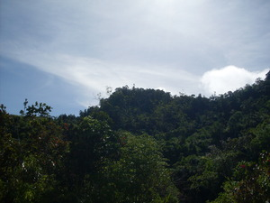

bubungan 
/bubuŋan/
n.
“hill/mountain”
n.
a hill or mountain
Iyan bayew malayat ne bubungan kayi te Simud ka Lantawan.
The highest mountain here in Sinuda is Lantawan.
Wrd.Gloss: hill; mountain
Morpho. ?-an
Eng. hill; mountain
Tag. buról; bundók
Ceb. bungtod; búkid
Ilo.: túrod; bántay
WBM: buntud
OCM: Topography and Geology (133)
DDP: Mountain (1.2.1.1)
Idiom: matikang ne bubungan
—mountain
Online dict status: -
Usage level: B
vi.
for someone (egpabubungan, migpabubungan/impabubungan, pabubungan, agent, eg><ø-pA-) to live in the mountains
Egpabubungan e pad kaaselem.
I will go to mountain tomorrow
Eng. live in the mountains (of people); mountains, live in (of people)
Online dict status: -
Usage level: R
vi.
for something (egkabubungan, nabubungan, patient, egkA><ø-) to be in the form of a mountain
Eng. mountain form, be in the; form of a mountain, be in the
Online dict status: -
Usage level: R
Updated by: RJH,TME,NJK,QDL,RAA
Last updated: 30/Oct/2009
"bubungan" in reader "Nekey-a ka dakel?"
"bubungan" in text "Datu Gawilan Rebels against the Government"
"bubungan" in text "Death of a Young Man"
"bubungan" in text "Ka kalibutan"
"bubungan" in song "Eggale-gale ka langun"
This page last updated: 19/May/2012
Copyright © 2009-2010, Matigsalug Language Christian Association, Inc